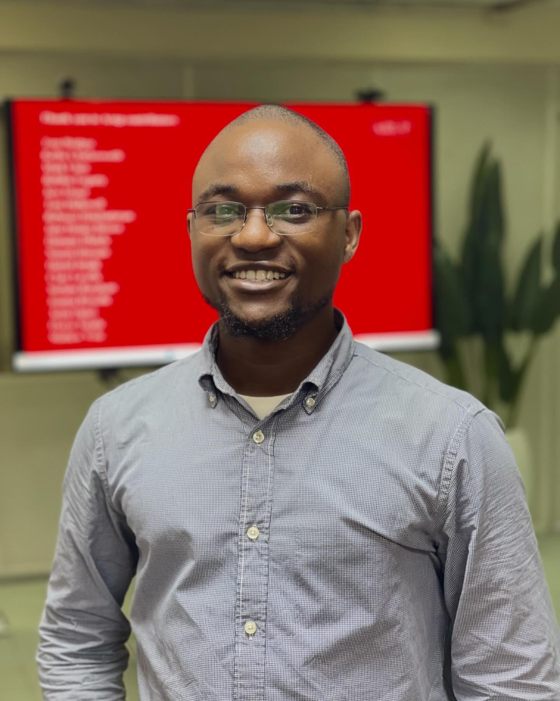

I plan, design and study the networks that move cities: roads, rail, transit and the data behind them. MS Transportation student and researcher at the University Transportation Centre, SC State University.

After spending what feels like a quarter of my life in Lagos traffic, I developed a strong conviction to create solutions that transform mobility. I believe we can do more than just survive city life, we can design systems that connect communities, accelerate trade, and expand opportunities.
My work spans traffic data collection, congestion and safety analysis, microsimulation, and roadway, earthworks and drainage design, from Lagos transit corridors to U.S. highway safety data.
Building transportation econometric models and decision-support tools for equity, economic and safety outcomes; supporting federal-relevant research with Cohda testbeds and SUMO, Synchro, NS-3, OMNET++ and Veins.
Geospatial accessibility analysis on the $2B Lagos Green Line; civil design lead for three National Diagnostic Centres.
100 km+ agricultural road network in Civil 3D; cost and schedule tracking on the Enugu–Onitsha Expressway.
Congestion study on Ikorodu Road, Lagos, published as first author in TARCE (2024).
Supervised piling works to a daily target of 10+ precast piles, with a zero-error record on stocktaking and quality checks.
Current work at the University Transportation Centre develops transportation econometric models and decision-support tools for equity, economic and safety outcomes, using hardware testbeds (Cohda) and simulation in SUMO, Synchro, NS-3, OMNET++ and Veins. Papers accepted at IEEE, AHFE (Elsevier) and TRB/TRR.
Google Scholar ↗I am open to infrastructure-related projects and research, and I welcome opportunities to collaborate on innovative solutions that improve everyday lives. Available for part-time internships and open to relocation nationwide.